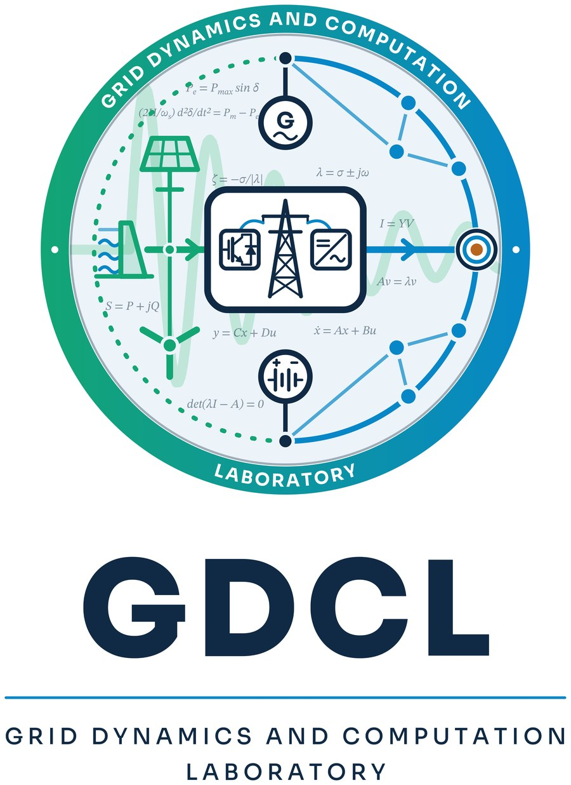

Where grid physics meets computation
Control and dynamics of converter-infeed power systems at IIT Indore.
The Grid Dynamics and Computation Laboratory is part of the Department of Electrical Engineering at the Indian Institute of Technology Indore. We study the control and dynamics of converter-infeed power systems to improve the performance and stability of modern electrical grids, with a focus on HVDC grids and modular multilevel converters (MMC).

Mission
Enable stable, secure and efficient operation of converter-dominated power systems through rigorous modelling, control design and scalable computation.
Approach
We combine analytical modelling, eigenvalue and modal analysis, frequency-domain and EMT simulation, and laboratory-scale MMC prototypes.
Community
We collaborate with universities, research institutes and industry in India and abroad, including KU Leuven, IIT Bombay, IISc, IIT Roorkee, the University of Toulouse and GRID-INDIA.